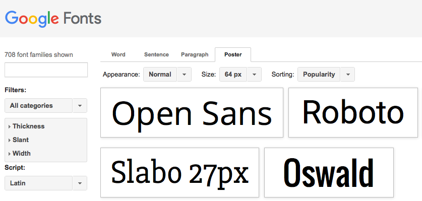
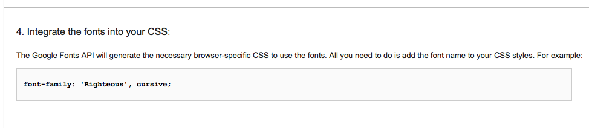

This project will help you find and include webfonts into your webpages using HTML and CSS. As you follow the tutorial you will
Reach out to @MozTeach on Twitter or ask a question on Discourse, our online community forum, if you need an assist!
Let's get started! You can follow the tutorial sequentially - step by step in order - or jump between sections using these links:
TL;DR: A webfont is a font you can call from the Web to work on your webpage.
A webfont is a 'typeface' like any other font on your computer, except it lives on the Web instead of on your hard drive. Different fonts have different styles. Those styles can communicate feelings, so picking the right webfont is an important design decision for your projects.
Fonts generally belong to one of several families such as
While you could conceivably mix and match fonts throughout a webpage to make sure no two words are alike, the more conservative and unified your design, the fewer fonts you use. People often use more than one font so that they can employ different fonts to show different kinds of information or organizational detail on the screen.
When you find a webfont to use in a webpage, it will likely be in the form of an external stylesheet or JavaScript script. Both methods - stylesheet and script - reference external links and call webfonts from the Web into your webpage for use. When you use a webfont you are, in effect, calling up its host and asking to borrow it for your page.
TL;DR: Webfonts live online so you can link to them and use them in your webpages.
Modern browsers include several default 'web safe' fonts you can call into your webpages just by adding them to your stylesheet (we'll get to that step soon). This list from w3schools.com shows you several web safe fonts, grouped by family, that you can use in your projects.
Companies like Adobe and Google also host large libraries of webfonts for you to use free of charge. These sites also give you the snippets of code you need both to link to the fonts in your HTML webpages and to apply the fonts in your CSS stylesheets. Check out these collections and browse for fonts you might like to include in your project.
Google uses links to external stylsheets to serve its webfonts, while Adobe uses external scripts. When you click on a font on either site, the site will show you instructions for how to call that font into your webpage and how to include it in your stylesheet. For the purposes of our tutorial, beginnning in the next step, we'll walk through an example using Google's site since it provides links to stylesheets and we are in a CSS module (though it also lets you import the fonts in others ways).
TL;DR: You link to a webfont in the head of a webpage to call it into your project.
Google's site lets you browse fonts several different ways. Click on the 'Poster' tab to see asnapshot of each font with its name displayed using that same font.
Let's take a look at the font called 'Righteous.' We're going to use this to replace the 'happy' font on our webpage, index.html. You can scroll down to find it or search for it using the box above the left sidebar. Notice that when you hover over a font in the main part of the page, it pops up from the background.
Next, click on the leftmost icon under the font's name. It looks like an arrow inside a box. This is the 'quick-use' button. The quick-use button takes to a set of instructions for using the font.
line 14 of index.html, which you can find in the left, FILES sidebar of the Thimble interface. This link connects your page to a stylesheet hosted by Goolge that has instructions for displaying the font you've chosen.
<link href='https://fonts.googleapis.com/css?family=Press+Start+2P' rel='stylesheet' type='text/css'><link href='https://fonts.googleapis.com/css?family=Righteous' rel='stylesheet' type='text/css'>.
In the next step of the tutorial, we'll look at how to use the rest of the instructions on your font's quick-use guide to include the font in your stylesheet.
TL;DR: You use the font-family selector in a CSS stylesheet to change the font of an HTML element.
The link we just pasted into index.html will call our webfont into our project. However, we still need to style whatever HTNL elements we want to display in our font.
To do so, we have to visit style.css, which you can find in the FILES sidebar. In addition to linking to Google's stylesheet in order to borrow the 'Rigteous' font, we also have our own stylesheet that let's use decide how to display each part of our webpage.
The index.html file links to our style.css file at line 32 of index.html. Any webpage you make can link to a stylesheet that lives in the same place, or folder (like zstyle.css), or to a stylesheet that lives online at an accessible URL, or web address (like the Google webfont).
Let's take a look at style.css. Our first, 'happy' font lives at line 87 of style.css. It has an id called firstFont that connects the instructions here with both our webfont and the div called firstFont at line 58 of index.html.
Now is the time to copy and paste the styling instructions from Goolge into our steylsheet.

The styling instructions for #firstFont look like this:
#firstFont{
font-family: 'Press Start 2P', cursive;
font-size:2em;
}
We want to replace the old font, called Press Start 2P with our new font so that these instructions look like this instead:
#firstFont{
font-family: 'Righteous', cursive;
font-size:2em;
}
After you make these changes, click on index.html one more time and check it out in the preview pane on the right side of the Thimble interface. The line of text that says 'This font makes me feel happy,' should now be displayed with the Righteous font.
TL;DR: Repeat Steps 3 and 4 to change the other fontson your webpage.
Continue to browse Google's webfonts and find replacements for each line of text on index.html. See if you can use the id on each div to find the right part of style.css to change for each line. Don't forget to link to each font in the head of index.html, either. Those links live between line 17 and line 30 of index.html. And if the Righteous font doesn't make you happy, change that one again, as well!
TL;DR: Break this page!
Congratulations! You made several design decisions and found the fonts to match the feelings on your page. By linking your webpage and stylesheet together, you've called fonts from the web to improve the look and feel of your project. Keep thinking about design as you explore other CSS activities in this module.